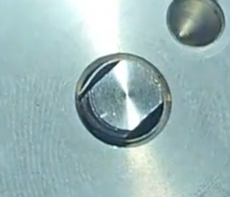
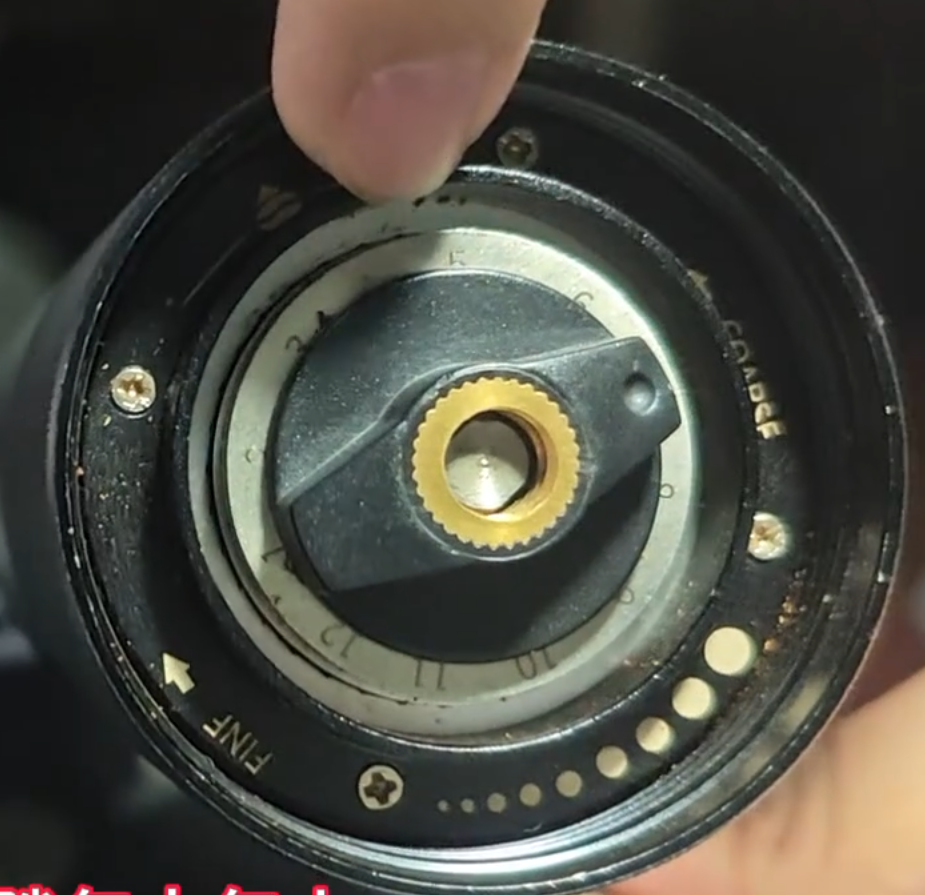
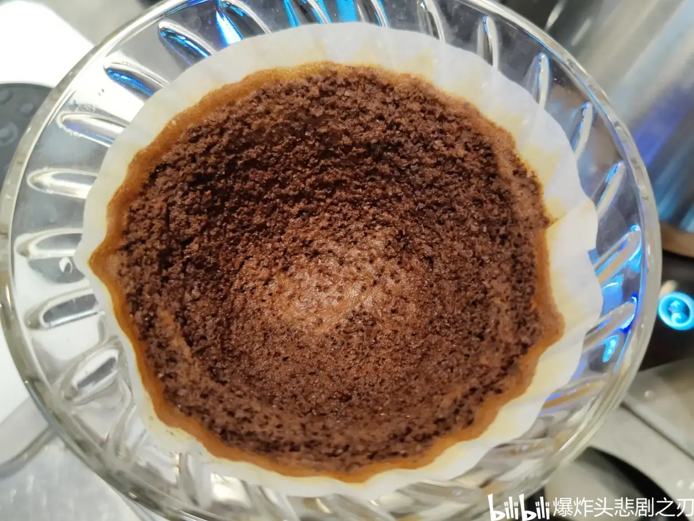
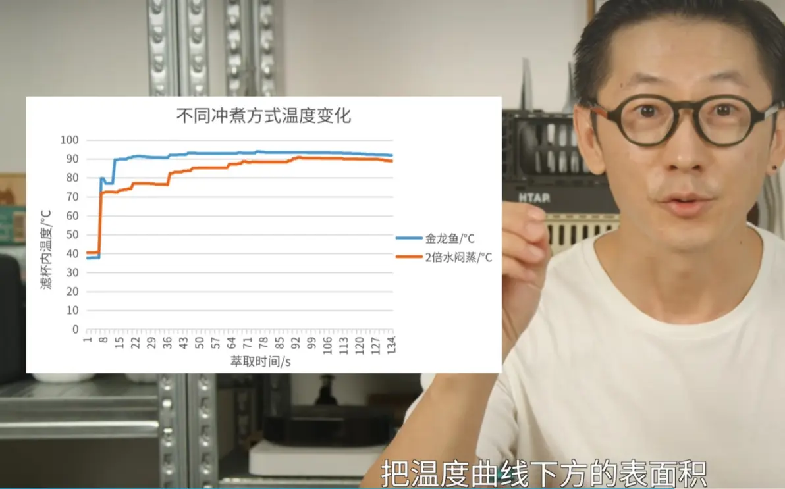
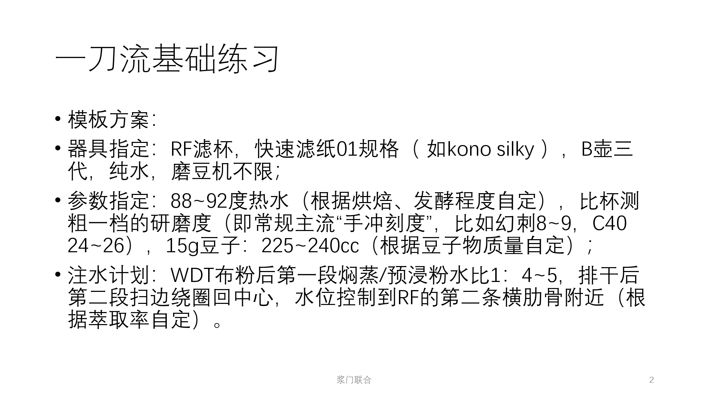
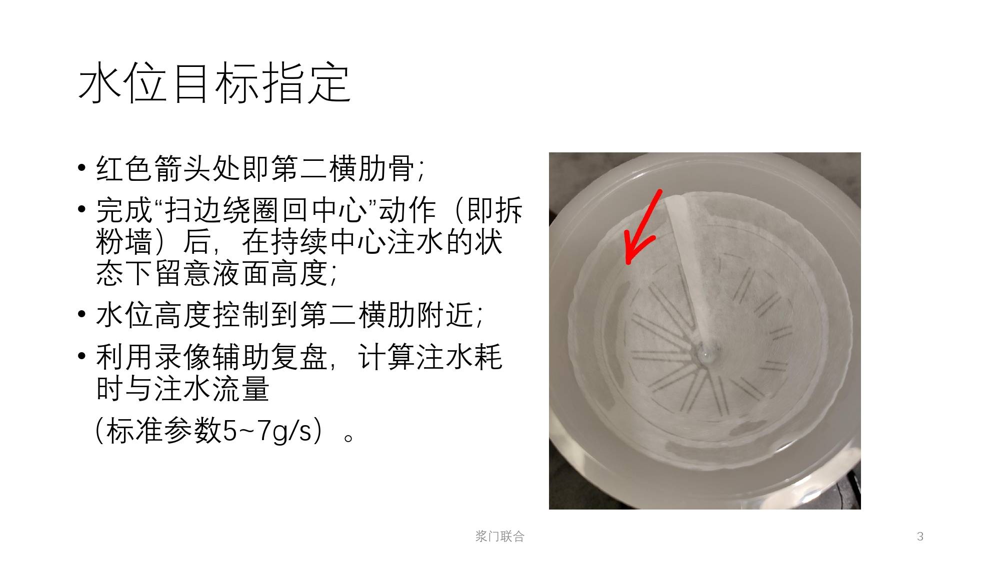
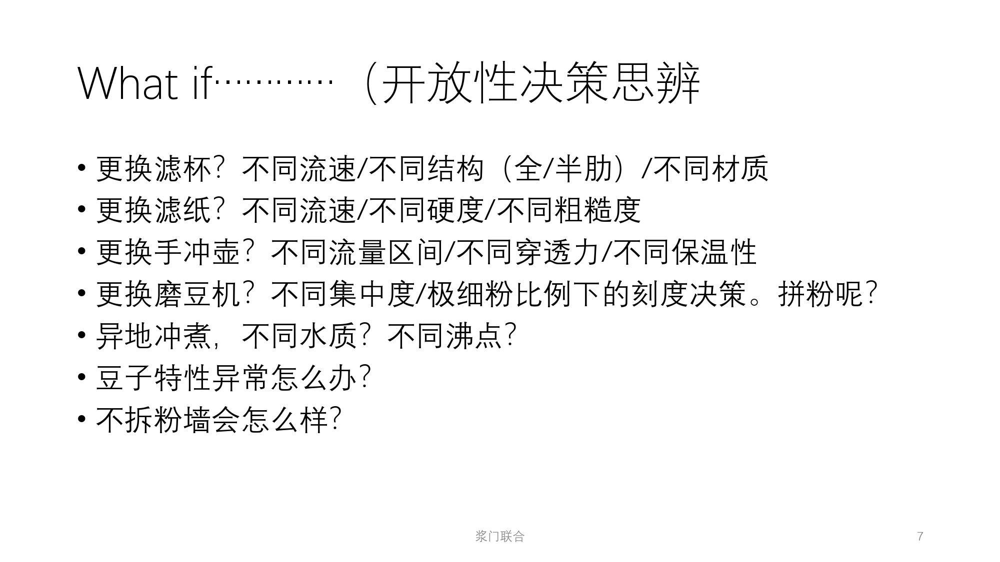
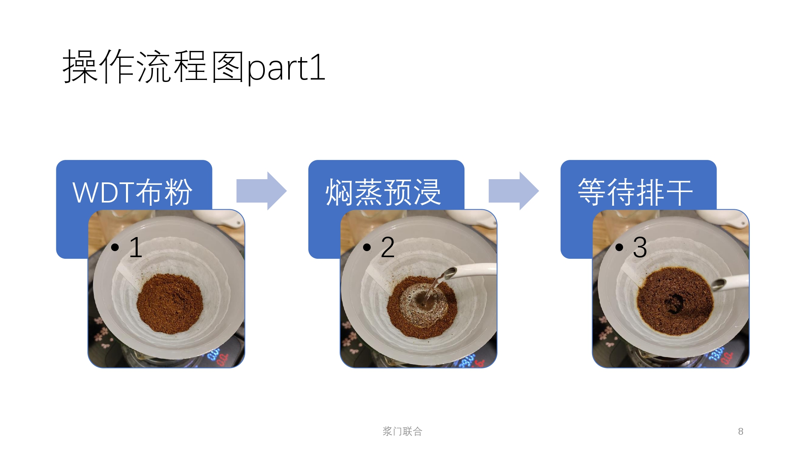
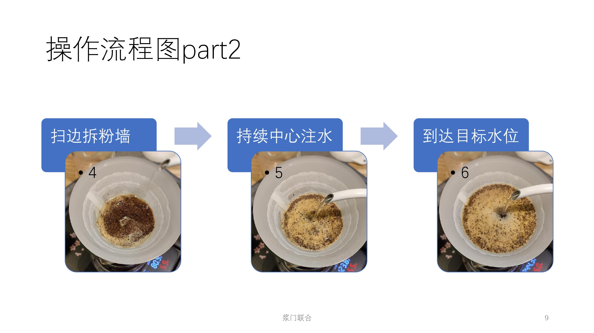
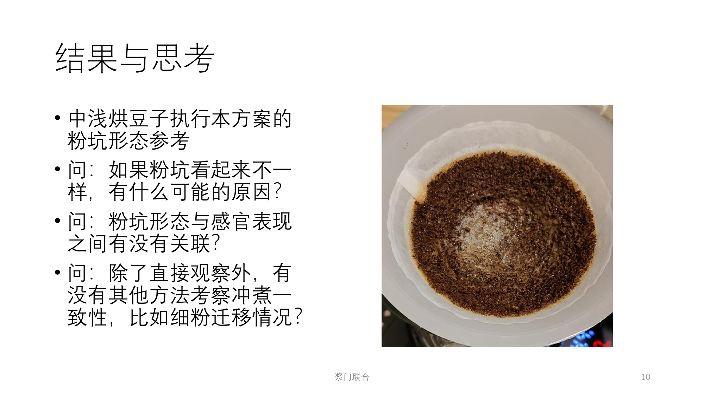

视频
【手摇磨豆机】仅需10块钱就可以调节同轴度的方法
aid：113731388377419
bvid：BV1Kv6pYSETw
时长：03:26
发布时间：2024-12-28 16:29:16
-
作者：冥王·啻非天
id：173847
-
归类：器材-手摇磨豆机-调整
-
内容
-
不锈钢带、手撕钢
-
0.1mm、0.15mm


当你使用摩卡壶的时候内部发生了什么？
aid：526695620
bvid：BV13M411M7Zi
时长：01:16
发布时间：2023-03-28 06:49:36-
作者：Sneey_Jochen
id：520690
挑战全网最容易学会的超简单V60滤纸贴合教学，专治强迫症。妈妈再也不怕我的滤纸不服帖了！
aid：300620012
bvid：BV1Cf4y1Z7eB
时长：04:10
发布时间：2022-07-03 14:50:11-
作者：爆炸头悲剧之刃
id：2990621
-
归类：冲煮-手冲-准备
-
内容
- 准备一杯干净冷水，手洗干净
- 滤纸放进滤杯，两手轻轻下推至底部贴合
- 一手固定滤纸，另外往滤纸底部灌水至满
- 热水冲洗滤纸
我尽力了…如何用手法拯救极细粉奇多的etz手冲表现？正统三段式注水手法，其他设备或豆子通用，防堵塞/旁路水/萃取不足/不均匀
aid：773149904
bvid：BV1A14y1Y7kR
时长：05:15
发布时间：2022-09-18 09:04:19-
作者：爆炸头悲剧之刃
id：2990621
-
归类：冲煮-手冲-注水-三段-正统
-
内容
16g粉、V60、1：16.67
- 小+大，10s，48g水(1:3)；摇晃
- 没漏完，30s开始；中心+小+大+提拉，30s，到171g，123g(1：7.67)
- 没漏完，1min10s开始；提拉+中+侧，30s，到267g，96g(1：6)
复刻厦门名店操作，稳定性拉满的高甜冲煮方案！聪明杯高温搅拌两段式萃取，0练习成本 完美解决浅焙豆耐萃堵塞问题，小白在家也能做到专业级出品，只因100%均匀萃取
aid：774397572
bvid：BV1514y1571a
时长：04:28
发布时间：2022-10-25 16:06:52-
作者：爆炸头悲剧之刃
id：2990621
-
归类：冲煮-聪明杯-注水
-
内容
本次演示的冲煮评划是94度热水，18g：300cc(1:16.67)，两段给水，一段100cc浸泡搅拌，第二段200cc稀释滴滤
本操作方案针对的造应症是高密度浅焙豆，也就是容易沉底的，并且极细粉量偏多，还特别耐萃经常萃不动，喝起来绿油油蔬菜汤一样的，那种磨细了堵、磨粗了寡，筛粉损失醇厚度，极端高细快口感又太刺激的，让人头秃的豆子。- 确认阀门关闭，先下100cc热水（其实用多少水量是看如何方便操作）。
- 器具搅拌，30s；10s内完成倒粉，进行20s搅拌；
- 第二段操作要点：一边注水搅拌旋转一边拉高水位，接近最高位时打开阀门；
- 最后就中心注水直到目标水量；1min开始漏水，2min结束
来一边看优化过的switch聪明杯夏季八冲一边听歌呗（乐否·先水后粉搅拌）
aid：816928834
bvid：BV1RG4y187sV
时长：03:21
发布时间：2022-10-27 13:02:04-
作者：爆炸头悲剧之刃
id：2990621
-
归类：冲煮-聪明杯-注水
-
内容
冲煮计划：94度热水，两段注入；研磨度lagom mini 1又3/4圈；18g: 300cc(1:16.67)；100cc搅拌，200cc滴滤- 下100cc热水，10s完成下粉，5s等待沉降；十字搅拌，15+15s，最后深处；45s
- 50s开始注水，一边注水搅拌旋转一边拉高水位，接近最高位时打开阀门；
尾段的中心注水最好是减小流量延长萃取时间），贴近液面注水（减少过度扰动），这样喝起来更均衡完整顺滑；
1min15s - 2min15s(2min25s)漏水结束
[一小时碎碎念警告]关于如何冲煮“下一壶好喝的咖啡”，详细讲解5000字专栏文章，给你最好的睡眠感受
aid：987375952
bvid：BV1mt4y1K7iB
时长：02:26
发布时间：2022-11-09 01:00:00-
作者：爆炸头悲剧之刃
id：2990621
-
归类：冲煮-手冲-综合
-
付费
-
专栏
关于如何做出一壶“好喝的”咖啡
高效、稳定、简洁的闭环
——–关于如何冲煮好咖啡的底层逻辑与方法论
前言
正文
1 基本概念与底层逻辑
- 定义：舒畅、愉悦，想喝第二口，自信分享。主观也是客观。
- 研究原因（痛点、出发点）：更好喝、更快、更稳定、更定向
- 研究目标（冲煮方案的评判标准）：找特定最佳出品方案、兼顾简单可重现、加分设备多样、客观表达
- 研究误区：万能解法、单一的评价维度、封闭的体系
2 方法论之冲煮闭环
- 冲煮计划：基于2.4的优化结论，以表格形式填写数据化的冲煮方案，包括但不限于 粉水比（及粉重水重具体数值）、研磨刻度、水温、冲煮时间、分段计划。
- 冲煮记录：按照冲煮计划操作并以方便的形式记录实际过程，全程录像。
- 冲煮评价：分温度、浓度、味觉、触觉等维度对咖啡液进行感官评价，有条件的进行众人评价及浓度检测并计算萃取率。
- 计划优化：根据2.2的录像、实际操作参数与2.3的感官评价、计算数值，判断该豆子的冲煮方案的调整方向（均匀度、萃取率、浓度），进而得出优化结论（具体措施及数值）。
3 方法论之冲煮框架
-
萃取均匀度
请先参考阅读 手冲咖啡最佳萃取四条法则 by北欧极浅花卷
讨论任何冲煮问题之前先确保萃取均匀度，否则免谈。

比较标准的均匀粉床，on 聪明杯均匀度相关常见问题：
（1）旁路水 （2）堵滤纸（3）水在粉层中不均匀透过均匀度相关常见误区：
（1）害怕“超时过萃”：时间长的萃取味道差的真实原因是旁路水与堵滤纸；
（2）过度翻搅：破坏了粉床本身拦截极细粉的能力，导致极细粉被排水负压吸引从而粘附到滤纸上，多见于快流速滤杯多次长间隔大水翻搅；
（3）过粗研磨：中央通道过萃，常见于V60冲煮深烘；
（4）粉床厚度不均：中央粉层过厚，底部粉块得不到热水接触导致萃取不足，常见于V60处理浅焙硬豆用细水流画大圈，热水在到达底部之前通过侧排提早离开滤杯 -
萃取率
（1）萃取率与酸甜平衡：萃取率偏低，口感倾向于酸，否则倾向于甜。一般认为酸甜平衡为佳，过酸口感刺激单薄缺乏支撑，过甜显齁不耐喝，具体平衡配比需要考察豆子调性及饮用者需求。酸甜平衡情况是最常用的萃取率感官评价指标（深烘豆除外）。
（2）萃取率与研磨度：研磨度越细，咖啡粉总表面积越大，调细会提高萃取效率，灵敏度高于其他参数。一般认为在能确保萃取均匀度的前提下萃取率越高对风味呈现越清晰，但也存在识别出“不想要的味道”（主要是烘焙瑕疵）以及“集中度过高”（粒径分布过窄）的情况，因此建议萃取率从高往低调，也就是先细后粗（某些磨豆机在调粗过程中出现萃取效率暴跌的情况，所以更不建议先粗后细）。
（3）萃取率与水温：
a.水温概念一：水温越高，热水进入咖啡粉粒间隙与粉粒裂缝的效率越高，也就是粉粒内物质的溶解扩散效率与水温呈现正相关。因此水温也是调节萃取效率的常用参数，主要根据烘焙度（或膨胀率，也可以直接看豆子密度）决定。一般中烘豆使用水温90~94°C。
b.水温概念二：手冲壶水温、粉床表面温度、粉床内部温度都是不一样的，具体差异受环境气温、器具材质以及萃取均匀度影响。务必注意萃取不均匀造成的粉床内部低温问题。寒冷地区及户外咖啡玩家请注意冲煮过程中的粉床失温现象 可参考 咖啡不好喝因素之一-萃取水温稳定性对于萃取有多重要 by怀仙居咖啡，以及 解构高甜冲煮法 高 快 细 大 by查老师的咖啡宇宙
关注水温更要看相关的热量变化（4）萃取率与时间：粉粒内物质从接触水开始逐渐扩散转移到液体中，该进程需要时间进行。在液体饱和度不变的情况下（持续新水注入、咖啡液排出)，不同的物质随时间进程萃取效率基本不变，但各自有不同高低的萃取效率，因此形成了 酸-甜-苦-咸 按顺序萃取的固有印象，事实上这是不同时间段内咖啡液体内物质占主导方改变产生的现象。可以认为一般萃取时间越长萃取率越高，但在浸泡模式下，在一定时长后时间对萃取效率的影响较低，高饱和度液体本身会抑制物质继续扩散，使萃取进程变缓慢。一般经验上认为萃取时间与醇厚度、尾韵有正相关，可以利用这点对冲煮结果做单独调整。
（5）萃取率与粉水比：同上述，液体饱和度与萃取效率呈负相关，但灵敏度不如研磨度、水温。一般使用调整粉水比的方法来处理低密度的亚洲豆，高浓度粉水比+长时间浸泡 可参考 关于云南豆的冲煮方式 by大山陪你喝一杯。
-
浓度与萃取模式：滤过VS.浸泡
（1）饱和度与萃取效率：一般通过改变浓度来调整饱和度，进而影响萃取效率；
（2）浓度与味觉：手冲范畴内，浓度过高的咖啡可以通过bypass解决过于集中难以识别的问题，浓度过低则很难挽救。在测试中一般采取1:16.67开始测试，这是目前的经验平衡点，适用于大部分埃塞豆及瑰夏种。
（3）两种萃取模式：可以用饱和度概念理解滤过式萃取与浸泡式的区别。四六法全过程用新鲜水萃取，可以理解过纯滤过式萃取，在粉层温度相同的情况下（实际上失温很严重）萃取效率高于浸泡式。法压壶/聪明杯萃取为典型的浸泡式，饱和液体持续浸出的溶解效率持续下降，同时失温也有所影响。
（4）半滤过半浸泡萃取：常规的冲煮过程中保持一定水位的滤杯萃取模式都是半滤过半浸泡，根据滤杯特性有不同比例。V60一般倾向于滤过，梯形一般倾向于浸泡，实际比例根据其他参数和人手操作会有所变化。 -
扰动与物理刺激
（1）扰动与萃取均匀度的关系：
a. 在不提前整备干粉床的情况下（参考 目前已知最好用的干粉床整备手法），粉床需要有一定穿透力的水流来达到快速均匀地升温，才能稳定高效地启动萃取进程，因此前中段冲煮过程中扰动收益大于负面影响。
b. 在冲煮后段，继续使用带穿透力的水流扰动会破坏粉床，不均匀的粉床会产生通道，也会产生前文所述的堵塞及旁路水问题。此时扰动收益逐渐低于负面。（2）扰动对口感的负面影响：
a.有一些文章认为高强度的机械作用会导致粉粒表面过萃，产生苦味和涩感。猜测这现象也与扰动冲击滤纸上的极细粉有关。不管是哪种情况，注水直接冲击粉床/滤纸都是不推荐的，除非饮用者口味较重且不要求滑顺口感。
b.在滤杯中存在一定液体时进行扰动是比较安全的。推测原因有咖啡液本身有缓冲作用，另外咖啡液本身的饱和度也会抑制粉粒过萃。
c.如迫不得已必须直接对暴露在液面外的粉床注水，应采用几乎无扰动的方式均匀注水。洒水器是比较好的选择，但它跟快冲框架不兼容且比较麻烦，请看自身需求决定。 -
其他
检查粉渣：一项很实用的检验萃取均匀度及萃取进度的方法。可以直接粉渣冲水，品尝液体口感占咖啡液内的比例（可以判断尾段拿得过多还是过少），如果发现明显的残留风味应考虑均匀度是否出问题。也可以分不同部位挖出粉渣逐个检查判断。
4、方法论之常用模板方案
- for常规V60冲煮 李震布粉法和金龙鱼冲煮法缝合
- for想省事且口味清爽的人 老牌烘豆师大佬是怎么冲咖啡的？
- for追求极致稳定高效的人的聪明杯方案 复刻厦门名店操作
［0基础新手练习模板（上）］当你忽然想认真做手冲咖啡，有什么基本功练习是可以先完成的？教你如何快速掌握 注水高度、指向落点、合理姿势，建立有用的肌肉记忆
aid：390243527
bvid：BV1Ad4y187WQ
时长：01:49
发布时间：2022-11-14 17:00:50-
作者：爆炸头悲剧之刃
id：2990621
-
归类：冲煮-手冲-注水-练习
-
内容
- 注水高度练习：找到你的手冲壶的水柱断裂点，适应它并且保持用连续的水柱进行注水。
- 慢速稳定绕圈练习：单手持握手冲壶，从顺/逆时针两种方向尝试进行绕圈保持注水速率不变，诀窍是手冲壶水平移动（角度不变）采用比较慢的移动速度，比较低的圆周频率。
- 快速绕圈练习：双手持握手冲壶，在指定范围内快速绕圈用比较大的注水速率，请注意站稳，保持身体核心稳定。
- 手冲壶持握动作模板
- 单手：直握/横握均可，顺手就行尽量采用让手腕轻松的方式。
- 双手：由于是快速绕圈手法专用，必须让左右手力量互相配合，双手手臂拾Vs压相互拮抗，不然动作会非常不协调，否则还不如直接单手（这是为了保护手腕防止劳动损伤）要么左手抬右手压，要么左手压右手抬，自己觉得怎么帅怎么来。
［0基础新手练习模板（下）］关于基本功练习的补充说明。本期主题16：00开始，关于注水速率练习及一些重点提醒
aid：902653180
bvid：BV1DP4y1y7vo
时长：27:14
发布时间：2022-11-16 08:48:00-
作者：爆炸头悲剧之刃
id：2990621
-
归类：冲煮-手冲-注水-练习
-
付费
咖势现场记录·看震震怎么用WDT一刀流处理震豆（台湾水洗瑰夏）。简洁、稳定、高效
aid：435283044
bvid：BV1T3411Z7Df
时长：01:55
发布时间：2023-01-14 12:47:50-
作者：爆炸头悲剧之刃
id：2990621
-
归类：冲煮-手冲-注水-现场
［复刻冠军方案］冲咖啡就是倒个水！用震震WDT一刀流方案冲一壶高香高甜且巨干净操作巨简单的74158水洗
aid：862912935
bvid：BV11G4y1C7wr
时长：04:54
发布时间：2023-01-16 02:38:37-
作者：爆炸头悲剧之刃
id：2990621
-
归类：冲煮-手冲-注水-WDT李震一刀流
-
内容
- 重量：15.5 + 57 - 260(1:16.67)
- 时间：10s - 30s - 1min5s - 1m40s
欺诈警告😆“三段式教学”来了！闲聊演示优化版WDT金龙鱼方案，看起来跟传统三段式很像但实际上是快冲（夏季八冲）的方案，太简单太稳定太好喝了
aid：650728815
bvid：BV1dY4y1d724
时长：08:14
发布时间：2023-01-21 08:30:07-
作者：爆炸头悲剧之刃
id：2990621
-
归类：冲煮-手冲-注水-WDT金龙鱼三段式
-
内容
- 16g豆，210g水，1:13
- 重量：金龙鱼为70+70+70，改为40(45)+100(95)+70
- 时间：10s-30-50-1min5s(下降1cm)-1min15s(不超过原高度)-2min
- 手法：WDT(粗)-小后蚊香-小后蚊香-小圈
只需要看两次秤的WDT三段式简短教学，优化版的金龙鱼方案，基于震震的夏季八冲技术路径
aid：650677429
bvid：BV1UY4y1d7fs
时长：04:29
发布时间：2023-01-24 00:05:00-
作者：爆炸头悲剧之刃
id：2990621
-
归类：冲煮-手冲-注水-WDT金龙鱼三段式
-
内容
- 15g豆，210g水，1:14
- 重量：金龙鱼为70+70+70，改为40(47.5,1:2~4)+100+70
- 时间：10s-30-47-57s(8成高度)-1min7s(不超过原高度)-1min50s
- 手法：WDT(粗)-小后蚊香-n小2大-1小1大中心
冲咖啡不就是倒个水？超甜的WDT高细快一刀流，咖啡小白最容易上手的冠军手法演示+深夜碎碎念。远离三段式告别PUA，挑战全网最催眠的咖啡视频
aid：481835001
bvid：BV1vT411S7cS
时长：13:33
发布时间：2023-02-13 16:00:55-
作者：爆炸头悲剧之刃
id：2990621
-
归类：冲煮-手冲-注水-WDT李震一刀流
-
内容
-
重量：15.7 + 52 - 246(1:15.5)
-
时间：10s - 40s - 1min20s - 2m
-
二段更稳，小圈，注水慢则粉床打开程度小
-
总结：冲煮-手冲-注水-WDT李震一刀流
- 一段 1:5，二段 1:10
- 重量：15，60(1:4)-230(目标)
- 时间：10s，25(±5)s，40s(±5)s，40(±5)s
- 手法：WDT，中蚊香(2)+摇晃(醇厚，堵)，中心平4小4大中
- 二段更稳、圈更小、注水更慢、则粉床打开程度更小
总结：冲煮-手冲-注水-WDT金龙鱼三段式
- （近似），一段 1:3(±1)，二段 1:7，三段 1:5
- 重量：15，40+100+70
- 时间：10s，20s，30s，10s(下降到8成高度 / 下降到1cm)，10s(不超过原高度)，45s
- 手法：WDT(粗)，小后蚊香+摇晃(醇厚，堵)，小后蚊香(n小2大)，小圈(1小1大(可能造成堵塞)中心）
泥浆四六法？简化版泥浆方案！一起来用浆体冲法把你的朋友甜死吧😆用高细快的逻辑做一壶看起来不像高细快的分段快冲高萃
aid：479379403
bvid：BV1DM411P7pj
时长：04:06
发布时间：2023-02-15 15:09:19-
作者：爆炸头悲剧之刃
id：2990621
-
归类：冲煮-手冲-注水-浆体
-
内容
SOP（参数自己调着玩吧。保守一点就压缩粉水比然后bypass）
15g，WDT，中等正常研磨度（比如C40，22～24格），水温中高（比如92～94），总水量210～240cc（看豆子的物质多不多，尾段味道苦不苦），快流速V60，- 在20(10注水要快+10)秒内完成70±10cc快速注水+大摇晃，
- 30秒(30，看液体下落状态，液柱变液滴就开始注水)开始注水(外圈大流量穿透搅拌，经过摇晃后的粉床不会黏附滤纸，搅拌带得动；如果不搅拌不摇晃，粉床会贴住那种情况下强行外圈搅拌会造成不均匀）到120cc，35秒完成
- 然后每当水位下降到80～90%就开始注下一段，比如到160cc、200cc、240cc就停，加小摇晃。误差不要紧 总时间在3min以内都没问题，最后上下晃动两下下水
45-50，65-70，180-240s，2min10s结束
这是2k60帧的划水视频。泥浆四六法的理论距离自洽还有一点距离，这是测试之一（中烘日晒）
bvid：BV1hm4y1r7s4
-
作者：爆炸头悲剧之刃
id：2990621
-
归类：冲煮-手冲-注水-浆体
-
WDT，12.4g粉，焖蒸64g，25s开始步骤2，35结束；43-48，56-63；200g，1min40s结束
接上一期。2k60帧的浆体流邪门新观点，浆体四六法的最新版理论解释
bvid：BV1mc411V7Xr
-
作者：爆炸头悲剧之刃
id：2990621
-
归类：冲煮-手冲-注水-浆体
-
内容
-
WDT，15.4g粉，1:19，1min25s完成摇晃，2min15s结束
-
焖蒸83g
-
步骤2：25-35s(140g)，不完全脱水时就开始，贴近加中小流量(5cm，5g/s)，利用斜面刨削，减少细粉移动到滤纸，不再使用高吊挂
-
步骤3：47-53(188g)，68-79(240g)
-
拓展：低扰动-魔术帽，强扰动-浆体
-
看起来很离谱却流得很顺畅！可能是目前最容易上手的傻甜手冲方案😂用喝起来像青苹果汁的卢旺达基芜湖水洗测试看看它傻甜起来有多好喝，顺便文字闲聊一下浆体理论
aid：824481278
bvid：BV1Mg4y1g7J6
时长：05:04
发布时间：2023-04-03 13:30:35-
作者：爆炸头悲剧之刃
id：2990621
-
归类：冲煮-手冲-注水-浆体
-
内容
- WDT，92度F壶，13g：200cc，2分钟左右流完，（1:15.3），1z kpro的7，粉渣水微甜微涩感
- 焖蒸73g，步骤3：45-55，60-70，2min左右结束
浆门回归，爆炸香甜的新版本缝合方案！无技术门槛！结合wbrc冠军徐诗媛变温冲煮思路与Hoffmann脉冲式浆体萃取方案，测试厦门以香见长的花魁
aid：829368018
bvid：BV1Uu4y117zc
时长：03:52
发布时间：2023-08-04 01:07:13-
作者：爆炸头悲剧之刃
id：2990621
-
归类：冲煮-手冲-注水-浆体
-
内容：
- 中密度（比如高海拔的日晒或厌氧）；中偏细研磨，这次用的C40 Mk3的24格（螺距1.5mm，相当于kpro的刻度7）；肥巴士滤杯，V60应该也可以吧（建议用轻便的塑料滤杯，因为要摇起来）
- WDT，粉水比1：18（11g：200cc）
- 注水分四段脉冲式注入，第一段用70度低温热水，（有两重好处，一是减少受热导致的香气损失，二是避免粉表因高温造成的微观局部过萃，提高一致性，也容许更长时间的萃取），50g
- 后面三段改品度中高温热水，卡着“安全水位线”做了次经典的浆体脉冲式注水（50：50：50cc）彻底拆掉粉床，用咖啡浆的形态进行萃取，所谓的“安全水位线”就是观察当前水位是否落到上一次注水时最高水位高度的80~90%区间，每个豆子的安全线各有不同，不过大致都在这个范围，（安全指的是不堵，不结块）
- 这次的最后一段注水其实是1m15s左右完成的，但流了足足3min，喝之前我都觉得可能要完蛋了，结果屁事没有，还非常好喝
- 在这里简单预测一下，理想的参数可能调整为粉水比1：17、时间在2m45s以内
总结：冲煮-手冲-注水-浆体
- 一段
- 重量：15g，70-120-180-240
- 时间：10，25-35，45-55，70-80，2min15s
- 手法：WDT，中蚊香+大晃动；下降到80～90%就开始注下一段(不脱水)，外圈，贴近，中小流量(5cm，5g/s)；小晃动；上下晃动收尾
逐帧吐槽营销号·三段式冲煮真的这么傻瓜稳定么？（这次AI标题居然立大功，都不用改）顺便聊聊接下来准备带去冲煮课讨论的内容
aid：1856251931
bvid：BV19W421X7BK
时长：11:17
发布时间：2024-07-28 03:59:00-
作者：爆炸头悲剧之刃
id：2990621
-
归类：冲煮-手冲-注水-反面
-
内容
- 焖蒸：排气、预浸泡
- 注水手法，时间间隔，排水程度
森流！最新的从木木老师冲煮课学来的框架产生的系列方案有名字了。这是森流配合马赫滤杯在冲煮Alo时的测试录像
aid：112925998122824
bvid：BV1BCYxeLEYT
时长：02:54
发布时间：2024-08-08 19:00:53-
作者：爆炸头悲剧之刃
id：2990621
-
归类：冲煮-手冲-注水-森流
-
内容
- 重量：18.4+45-100-125-150-215-315
- 时间：0-10s-20s-25s-30s-1min5s-1min15s-1min30s-2min15s
- 手法：蚊-中-大-中-漏-蚊-中-漏
逻辑更清晰的碎碎念·暴力版森流测试，填仓团的口粮肯尼亚，几乎算是一把过，如炸（只是粉水比略大了一点点
aid：113131166633615
bvid：BV1EQ4fe4EPn
时长：03:38
发布时间：2024-09-14 00:33:07-
作者：爆炸头悲剧之刃
id：2990621
-
归类：冲煮-手冲-注水-森流
-
内容
- 重量：20(比杯测细一点)+80-180-300
- 时间：0-13s-15s-20s-40s-1min50s
- 手法：蚊晃-停-4大-中-漏
森流的非典型喂饭式教学，但适合进阶手冲玩家！用折纸冲一壶暮岸单车水洗站的红布林味、甜到上天的日晒，初恋都没这么甜🤣
aid：113372423065149
bvid：BV1271sYqE94
时长：05:51
发布时间：2024-10-26 15:27:06-
作者：爆炸头悲剧之刃
id：2990621
-
归类：冲煮-手冲-注水-森流
-
内容
- 重量：15(比杯测细一点)+75-100-165-230
- 时间：0-13s-23s-33s-43s-1min20s-1min35-2min10s
- 手法：中心为主-停-小水流-中-漏(脱水排干)-中-漏
碎碎念（有字幕了版😂）幻刺+RF目前最安逸的粗研磨多段脱水冲法，缝合旧四六方案但使用森流框架做参数决策，免拼粉免WDT，适用于高均匀度磨豆机，更均衡表达
aid：113703487800044
bvid：BV1UyCLYgEwT
时长：10:13
发布时间：2024-12-24 04:25:00-
作者：爆炸头悲剧之刃
id：2990621
-
归类：冲煮-手冲-注水-森流
-
前传
- BV1eKk6YJEWH
- 粗研磨
- 重量：13+33(1:2.5)-63(到1:5)-110(到1:10)-160-190-213
- 时间：10s-30s-35s-50s-1min5s-1min40s-1min50s-2min20s-2min30s-2min50s-3min10s
- 手法：不WDT+中蚊-/-中2外(中主)-/-中2外-/-中2外-/-中-/-中-/
-
内容
- 粗研磨
- 重量：12.5+45(1:3~4)-85(到1:5)-125(到1:10)-168-208
- 时间：10s-40s-50s-1min15s-1min30s-1min50s-2min-2min10s-2min25s-2min53s
- 手法：不WDT+中蚊中-/-中2外(中主)-/-中-/-中2外-/-中2外-/
小白友好简单方案 碎碎念演示·上了聪明杯底座的RF简直如虎添翼？不，这是懒人的大解放，拿这套操作创死三段式！用完保证你再也喝不惯外面三脚猫咖啡师们的出品
aid：113990227198816
bvid：BV14MK5exEGX
时长：06:54
发布时间：2025-02-12 11:42:00-
作者：爆炸头悲剧之刃
id：2990621
-
归类：冲煮-聪明杯-注水
-
内容
- 粗研磨
- 重量：15+75(1:5)-225(目标)
- 时间：10s-30s-60s-3~4min-5min
- 手法：WDT+中蚊香-开 漏(不完全) 关-中平后暴力-等待 开-漏
容易练习、新手友好的轮椅式一刀流冲煮方案演示（精华版）&直播互动预告。兼容常规磨豆机和普通手冲研磨度，操作也很简单
aid：114201217467907
bvid：BV1T5X1Y1EAm
时长：02:52
发布时间：2025-03-21 15:59:10-
作者：爆炸头悲剧之刃
id：2990621
-
归类：冲煮-手冲-注水-轮椅式一刀流
-
部分开源图文






-
内容
- 重量：15+75(1:5)-240(目标)
- 时间：10s-40s(粉床不变)-1min10s-2min
- 手法：WDT+中蚊香-2外反蚊(3)中-漏
（碎碎念完整版）容易练习、新手友好的轮椅式一刀流冲煮方案演示&直播互动预告
aid：114201687294793
bvid：BV1FTXyYaE8s
时长：09:47
发布时间：2025-03-22 03:49:00-
作者：爆炸头悲剧之刃
id：2990621
-
归类：冲煮-手冲-注水-轮椅式一刀流
-
付费
换司令官测试&碎碎念解释轮椅方案。有点长 建议睡不着的时候催眠用🤣
aid：114233261952562
bvid：BV1ctZGYxEjV
时长：09:09
发布时间：2025-03-27 07:51:18-
作者：爆炸头悲剧之刃
id：2990621
-
归类：冲煮-手冲-注水-轮椅式一刀流
-
内容
- 重量：15+75(1:5)-236(目标)
- 时间：10s-1min(粉床不变)-1min25s-2min30s
- 手法：WDT+中蚊香-2外中-漏
总结：冲煮-手冲-注水-轮椅式一刀流
- 一段 1:5，二段1:10
- 重量：15，75(1:5)-230(目标)
- 时间：10s，40(±10)s，30s(±5)s，1min(±10)s
- 手法：WDT，中蚊香，2外反蚊(3)中
轮椅方案测试收尾🤣以静制动（zp6的粉流速太快-换流速慢一点的滤杯），但是平底滤杯放锥形滤纸用锥形滤杯的方案😂
aid：114290220732017
bvid：BV1DhRBYBETr
时长：07:43
发布时间：2025-04-06 09:19:53-
作者：爆炸头悲剧之刃
id：2990621
碎碎念思路详解之..三段式版本的轮椅方案，对耐热的便宜口粮浅烘有特效？用幻刺和飓风滤杯演示 完美榨干回响的水洗肯尼亚，稳定出高强度水果风味并保持干净口感
aid：114688260115652
bvid：BV1EmMbzpEUe
时长：11:56
发布时间：2025-06-15 16:18:47-
作者：爆炸头悲剧之刃
id：2990621
碎碎念之..蚊香绕圈式手冲到底怎么做？用lili mini来一次吐槽。真的 看到用锥形滤杯教绕圈的就很烦躁，没玩明白的还把小白带进坑的人能不能少一点
aid：114703309276873
bvid：BV1BpNjzgEnz
时长：05:31
发布时间：2025-06-18 08:04:59-
作者：爆炸头悲剧之刃
id：2990621
字幕+BGM版，RF+聪明杯 利用阀门浸泡提高热量利用率（避免流速过快导致的热量浪费+不完全浸润-内聚力问题）4段方案操作演示
aid：114857877702666
bvid：BV1dxunztEZc
时长：04:25
发布时间：2025-07-15 15:11:04-
作者：爆炸头悲剧之刃
id：2990621
冲煮攻略😆碎碎念演示（不是）轮椅中的轮椅式冲煮方案，用囍乐的alo蜜处理演示 RF聪明杯稳定完整处理大物质量耐萃豆的最简单方法
aid：114936193748243
bvid：BV1uT8RzwEQj
时长：09:25
发布时间：2025-07-29 11:08:03-
作者：爆炸头悲剧之刃
id：2990621
碎碎念之用飓风和轮椅冲法尝试一下准沸水（95度）萃陈豆（接近3个月的飞机豆）
aid：115010651029734
bvid：BV1YqtSzEEGR
时长：05:37
发布时间：2025-08-11 14:52:22-
作者：爆炸头悲剧之刃
id：2990621
碎碎念之..到乐否现场用过萃冲一壶肯尼亚🤣🤣🤣顺便分享一下轮椅方案（字幕版
aid：115197716990503
bvid：BV1GWpHzdEvs
时长：03:28
发布时间：2025-09-13 15:38:36-
作者：爆炸头悲剧之刃
id：2990621
碎碎念之..到乐否现场用过萃冲一壶肯尼亚🤣🤣🤣顺便分享一下轮椅方案（高清raw录像
aid：115197716991698
bvid：BV1GWpHzdEGe
时长：03:47
发布时间：2025-09-13 16:02:11-
作者：爆炸头悲剧之刃
id：2990621
碎碎念日常之今天心情好冲个dak哈哈哈🤣还是最近用的谜之新概念三段式快冲法，真的好好用但还是不知道怎么写SOP
aid：117042053252980
bvid：BV1SvMk6ZE96
时长：07:12
发布时间：2026-08-05 08:56:03-
作者：爆炸头悲剧之刃
id：2990621
9Barista: 安全须知/上手心得/彩虹P
aid：208553612
bvid：BV1rh411J7Uf
时长：28:19
发布时间：2021-10-10 14:56:51-
作者：ravenclawofhogwarts
id：6133911
中文字幕｜更强的V60冲煮方案 James Hoffmann
aid：1306056916
bvid：BV1XM4m11727
时长：10:25
发布时间：2024-07-13 11:46:11-
作者：AC是个solo字幕组
id：9149316
学会冲煮咖啡前的小诀窍，让冲煮手法不再那么重要
aid：671227605
bvid：BV1sU4y147Ws
时长：05:22
发布时间：2021-01-13 17:32:10-
作者：Leebrst
id：10013399
管理好咖啡粉床，做好闷蒸，一起来夏季八冲
aid：246187689
bvid：BV1yv411W78b
时长：09:24
发布时间：2021-01-17 23:00:06-
作者：Leebrst
id：10013399
「均匀是咖啡萃取的核心」你所理解的萃取温度可能一直是假的
aid：886585922
bvid：BV1JK4y1n7FV
时长：07:01
发布时间：2021-02-03 23:00:05-
作者：Leebrst
id：10013399
研磨粗细对单阀摩卡壶真的很重要
aid：114347095496196
bvid：BV1mpoMYJEYL
时长：05:30
发布时间：2025-04-16 10:12:39-
作者：孤独的咖啡客-丸厂长
id：11102799
摩卡壶泄压阀需要更换吗？
aid：116809319652241
bvid：BV1zV7a6vEZw
时长：05:18
发布时间：2026-06-25 06:28:52-
作者：孤独的咖啡客-丸厂长
id：11102799
免费教你如何咖啡杯测
aid：763003227
bvid：BV1N64y1a7Fq
时长：09:46
发布时间：2021-09-19 10:38:53-
作者：咖啡猎人顾娘娘
id：13929511
摩卡壶配件使用教程
aid：496719802
bvid：BV1VK411Y7Ex
时长：05:33
发布时间：2024-01-23 05:34:57-
作者：飞翔的蒲公英_s
id：16246705
1小时学完马原，精简速成，真救命!【考研/考公 | 空卡】
aid：115291652693101
bvid：BV1THnyzzEwz
时长：19:00
发布时间：2025-10-02 09:20:00-
作者：空卡空卡空空卡
id：16671656
【中字】James Hoffmann_摩卡壶使用技巧
aid：551125622
bvid：BV1hq4y1F7UU
时长：12:05
发布时间：2022-01-31 03:01:22-
作者：PanZoe
id：16720907
【Kuma-san在家做咖啡】James Hoffmann推荐的聪明杯冲煮方案 Mr.Clever Dripper
aid：889474258
bvid：BV1zP4y1s7NU
时长：02:34
发布时间：2021-07-28 10:15:11-
作者：Kuma-san
id：18208477
摩卡壶の好伴侣-手持奶泡器拉花教学
aid：1055392306
bvid：BV1cn4y1976U
时长：03:41
发布时间：2024-06-05 22:00:00-
作者：鹏鹏佛系咖啡馆
id：19065840
摩卡壶の好伴侣-手持奶泡器拉花教学2.0
aid：112631306391347
bvid：BV1YagjepE4q
时长：03:54
发布时间：2024-06-17 09:55:25-
作者：鹏鹏佛系咖啡馆
id：19065840
手持奶泡器拉花教学3.0-盘点打奶的易犯错误
aid：112881991418738
bvid：BV1ADvxetEq2
时长：05:21
发布时间：2024-08-01 03:25:00-
作者：鹏鹏佛系咖啡馆
id：19065840
用底层逻辑打破咖啡玄学！——《手冲咖啡中的物理学》介绍
aid：255682409
bvid：BV1LY411j7rK
时长：04:06
发布时间：2022-04-15 11:53:48-
作者：北欧极浅花卷
id：19136835
咖啡泡的越久一定越苦吗
aid：117114379704226
bvid：BV1DHbr6gEEe
时长：02:26
发布时间：2026-08-18 03:29:50-
作者：W的咖啡实验室
id：22346073
垒壶素材 PADO 9barista评论区热闹一下！灾难级品控和售后，抄都不会抄的典型案例。
aid：114722200424134
bvid：BV19mNmzWENX
时长：03:16
发布时间：2025-06-21 16:08:07-
作者：Miller312
id：23748735
小宁 | 冲煮建议 Hario聪明杯增强出品一致性的手法
aid：589131005
bvid：BV14B4y1N7Ph
时长：03:18
发布时间：2021-07-18 11:14:10-
作者：大家好我是小宁
id：24029934
国产9barista 大横评（上）野火 废豆 垒壶 锤壶 祖国版的9b 是否值得购买？
aid：536819785
bvid：BV1CM411d78r
时长：07:05
发布时间：2023-12-04 13:09:00-
作者：咖啡马克
id：25699090
国产9barista 大横评（下）野火 废豆 垒壶 锤壶 祖国版的9b 是否值得购买？
aid：237663877
bvid：BV1ee411r72Z
时长：09:35
发布时间：2023-12-23 02:45:14-
作者：咖啡马克
id：25699090
牛奶咖啡的配比怎么定？
aid：584679040
bvid：BV17z4y1Z7ba
时长：04:27
发布时间：2020-09-22 10:00:11-
作者：Sofia的LUMOS咖啡
id：35692494
保姆级法压壶打奶泡分解教程，欢迎大家交作业
aid：887389628
bvid：BV14K4y1N7aD
时长：04:19
发布时间：2021-04-08 04:00:06-
作者：Sofia的LUMOS咖啡
id：35692494
手冲滤纸测评｜为不同烘焙程度设计的滤纸长啥样？漂白滤纸就一定没有味道吗？
aid：930273007
bvid：BV1ZK4y1o71P
时长：07:45
发布时间：2021-04-28 04:00:09-
作者：Sofia的LUMOS咖啡
id：35692494
为什么聪明杯做出来的咖啡不容易出错？奉上两种制作方式，你平时怎么用呢？
aid：933074358
bvid：BV1dM4y1g7ge
时长：08:24
发布时间：2021-09-18 04:29:42-
作者：Sofia的LUMOS咖啡
id：35692494
干货｜意式咖啡配比的万金油公式，澳白和拿铁的比例到底应该怎么定？看懂扣1看不懂扣眼珠子（狗头狗头）
aid：991947815
bvid：BV1px4y157vj
时长：06:56
发布时间：2023-02-15 07:43:02-
作者：Sofia的LUMOS咖啡
id：35692494
超详细的摩卡壶萃取指南来了！
aid：113848426238128
bvid：BV15kwAefEFt
时长：09:48
发布时间：2025-01-18 08:35:13-
作者：Sofia的LUMOS咖啡
id：35692494
咖啡处理厂长什么样｜日晒、水洗、蜜处理的处理法到底有什么区别？什么是干式发酵？4分钟带大家参观埃塞歌迪贝产区的咖啡处理厂！（结尾有彩蛋哦～）
aid：115751029576987
bvid：BV154qzBZEqF
时长：06:00
发布时间：2025-12-20 08:50:13-
作者：Sofia的LUMOS咖啡
id：35692494
请停止先加浓缩是美式后加浓缩是澳黑的无脑科普了，观众不傻消费者不傻咖啡师也不傻！
aid：116396197485322
bvid：BV1yAQtB1Exy
时长：06:51
发布时间：2026-04-13 07:25:02-
作者：Sofia的LUMOS咖啡
id：35692494
我有勇气我都不怕！
aid：116757494825615
bvid：BV1T1jT6CEuh
时长：00:38
发布时间：2026-06-16 02:48:59-
作者：张语潇与张师傅
id：36042948
【宿舍向】第二期 极低成本的手冲咖啡解决方案 如何在宿舍“优雅”地做出一杯咖啡
aid：1956041031
bvid：BV1Ny411B7kz
时长：04:04
发布时间：2024-07-11 12:36:38-
作者：掌叶半夏-
id：46812157
【宿舍向】第十期 低成本的宿舍咖啡解决方案 丢掉脑子 拥抱聪明杯
aid：115279052937837
bvid：BV1StnDzZEHq
时长：02:37
发布时间：2025-09-28 00:22:01-
作者：掌叶半夏-
id：46812157
【意式入门#47】旋转布粉器正确使用逻辑｜分清找平工具和解块工具的边界
aid：117114128043312
bvid：BV1eDbr6nECJ
时长：02:19
发布时间：2026-08-18 12:10:00-
作者：爱喝咖啡的林同学
id：82653145
咖啡浓度仪介绍：原理&作用&使用方法
aid：342710799
bvid：BV1694y1y7h9
时长：12:05
发布时间：2022-06-19 11:06:45-
作者：强真的咖啡工作室
id：97260694
什么是真正的中式咖啡！奶嘴卢旺达体验
aid：115823708478093
bvid：BV1nVvfBHEHG
时长：06:21
发布时间：2026-01-02 04:55:29-
作者：强真的咖啡工作室
id：97260694
万能手冲公式·四六冲煮法
aid：411816570
bvid：BV1ZV411Q7Fe
时长：01:26
发布时间：2024-01-27 10:51:39-
作者：张张咖啡日常
id：100712403
粕谷哲的聪明杯终极四六冲煮法
aid：1302725891
bvid：BV1gM4m197CG
时长：01:39
发布时间：2024-04-03 14:21:39-
作者：张张咖啡日常
id：100712403
世界冠军粕谷泽的四六冲煮法-详细解析教学
aid：114960084501898
bvid：BV1qhhPziEMx
时长：02:30
发布时间：2025-08-03 11:00:00-
作者：张张咖啡日常
id：100712403
聪明杯双浸泡冲煮法：出品更甜、容错率更高
aid：116249832983629
bvid：BV1wNwqzaEub
时长：01:58
发布时间：2026-03-18 12:00:00-
作者：张张咖啡日常
id：100712403
聪明杯混合冲泡法，新手也能冲出高甜感咖啡
aid：116964794042723
bvid：BV13Ggy6uENw
时长：01:29
发布时间：2026-07-23 00:00:00-
作者：张张咖啡日常
id：100712403
普通人如何搞懂历史？一期带你看完中华二十四史！
aid：115275647293457
bvid：BV1zunEzQEZv
时长：02:21
发布时间：2025-09-27 10:12:27-
作者：浪花姜
id：102584256
谁说摩卡壶不行？如何用摩卡壶来一杯热拿铁
aid：874541841
bvid：BV1EN4y1y7yb
时长：12:05
发布时间：2023-10-12 16:17:18-
作者：啥都会一些的胡子哥
id：109698483
乔治队长｜11款锥形滤纸滤材全方位测评，今后滤纸的选择将有逻辑起来
aid：895631044
bvid：BV1eA4y197xe
时长：20:11
发布时间：2022-04-15 03:45:48-
作者：好奇的乔治队长
id：120533040
如何做出一杯风味明确，温度适宜且不寡淡的冰手冲咖啡？
aid：116771654795542
bvid：BV1evja64E1e
时长：15:15
发布时间：2026-06-18 14:59:02-
作者：好奇的乔治队长
id：120533040
如何设计出一杯好喝的美式咖啡？
aid：116946926635311
bvid：BV1fjKr6AEYZ
时长：13:09
发布时间：2026-07-19 13:42:24-
作者：好奇的乔治队长
id：120533040
摩卡壶出油 全流程细节六分钟 摩卡壶教学
aid：113593815139784
bvid：BV1RUi2YpEKA
时长：06:38
发布时间：2024-12-04 09:34:42-
作者：大茶狐
id：159150434
【无屿】咖啡厌氧处理法介绍丨带你了解厌氧日晒、厌氧水洗、双重厌氧的底细
aid：405015746
bvid：BV1xG411o757
时长：06:43
发布时间：2023-08-22 09:35:56-
作者：无屿咖啡Neverland
id：239358964
【新手变大神】最被低估的手冲咖啡冲煮神器｜D特压不是爱乐压 | Delter Coffee Press
aid：680841925
bvid：BV1QS4y157Bq
时长：08:07
发布时间：2022-01-21 07:00:27-
作者：吃豆星人哈哈哈
id：261480836
聪明杯冲煮终极指南 by James Hoffmann
aid：245564734
bvid：BV1iv411b7oA
时长：07:40
发布时间：2020-12-04 02:23:03-
作者：咖啡单
id：305076908
2分钟美味咖啡 | 奶泡厚？粗？大？咖啡拉花第一步，零基础怎么练打奶泡
aid：582593296
bvid：BV1j64y1u7ku
时长：06:08
发布时间：2020-03-28 02:00:37-
作者：牛小咖
id：335248702
2分钟美味咖啡 | 单双阀之争 说不难也有点难的摩卡壶进阶教程
aid：800007799
bvid：BV1wy4y187Hg
时长：10:05
发布时间：2020-10-27 12:00:30-
作者：牛小咖
id：335248702
咖啡拉花冠军告诉你新手该怎么选拉花缸，容量/把手/重量/怎么考量？
aid：1753865057
bvid：BV1rt421c7wm
时长：11:21
发布时间：2024-05-04 02:00:00-
作者：牛小咖
id：335248702
你的聪明杯心里堵得慌？咖啡大佬在线疏通！
aid：559180874
bvid：BV1Je4y1m7Ni
时长：07:44
发布时间：2022-10-18 10:54:24-
作者：西地那啡
id：339653235
什么年代了还在喝传统冷萃？咖啡大佬手把手教你做超好喝的冰手冲
aid：533869076
bvid：BV1gu41137fR
时长：12:37
发布时间：2023-09-22 09:50:09-
作者：西地那啡
id：339653235
摩卡壶测试——用浓度仪测试下壶水量多少对萃取率的影响。本次分别用1：4-8的水粉比，测试结论在视频最后以图标形式分享给大家。因布粉、离关火手动控制，数据会有出入
aid：222732789
bvid：BV148411N7PK
时长：07:31
发布时间：2023-01-11 04:27:16-
作者：听说Coffeestory
id：352158101
美式咖啡比例 | 用浓度仪计算摩卡壶做美式咖啡加多少水？——数据只是参考，咖啡还是一个人口味喜好为主。测试也只是我好奇心驱使，工具有限，诸多不严谨，请大神指教。
aid：570061772
bvid：BV1dv4y1J76D
时长：04:06
发布时间：2023-04-17 02:38:08-
作者：听说Coffeestory
id：352158101
手冲咖啡：注水高一点，还是低一点？
aid：116029011394725
bvid：BV1zVFszDExP
时长：03:07
发布时间：2026-02-07 11:06:24-
作者：马宅里
id：355773725
手冲咖啡：小水流绕圈，还是大水流绕圈？
aid：116052096714897
bvid：BV1AocxzPEMh
时长：04:28
发布时间：2026-02-11 12:57:11-
作者：马宅里
id：355773725
咖啡豆各种处理法——合集版
aid：1400296744
bvid：BV1p642137fk
时长：16:37
发布时间：2024-02-07 12:00:00-
作者：世界咖啡品牌
id：356633292
一小时速通408操作系统
aid：115287407984986
bvid：BV1V5nqzcErH
时长：59:30
发布时间：2025-09-29 11:46:39-
作者：11408考研良子
id：385409016
一杯好喝的牛奶咖啡参数配比分享
aid：115269506695419
bvid：BV1JLn3zeELp
时长：07:20
发布时间：2025-09-26 08:17:20-
作者：阿乐不会拉花
id：385707340
顽固布粉器｜加装轴承
aid：114512283829817
bvid：BV1s8E1zNE6n
时长：04:03
发布时间：2025-05-15 14:35:45-
作者：Lian_726
id：386402836
摩卡壶增压阀使用指南
aid：116389536860962
bvid：BV1k7DDB6E8t
时长：05:16
发布时间：2026-04-12 03:19:13-
作者：Lian_726
id：386402836
咖啡滤纸大测评 | 不同滤纸对风味有什么影响？我的咖啡豆应该用什么滤纸冲煮？
aid：116499226299317
bvid：BV1t2RuB5Etq
时长：22:50
发布时间：2026-05-04 01:05:00-
作者：尹师傅-咖啡版
id：386704538
必收藏<三段式>经典手冲咖啡万能冲煮法
aid：895341302
bvid：BV1pP4y1K7Bi
时长：03:01
发布时间：2022-04-04 03:55:27-
作者：小北在鹿上
id：390345186
咖啡小课堂｜一个表格教你用摩卡壶做一杯好喝的美式咖啡
aid：351048794
bvid：BV1vR4y1b7sf
时长：04:03
发布时间：2023-01-30 04:20:34-
作者：Sherry的咖啡与酒
id：402651927
冠军冲煮法：聪明滤杯还能这样用？超级甜！
aid：113129858074240
bvid：BV1T94ZeTE4i
时长：01:57
发布时间：2024-09-13 10:55:44-
作者：咖啡狗歪k
id：418187539
打奶总翻车？法压壶也能打出100%成功牛奶！
aid：115972304275621
bvid：BV1Bs6EBJEJP
时长：07:35
发布时间：2026-01-28 10:47:01-
作者：十八线整活艺术家
id：418441309
咖啡压压乐丨聊聊【爱乐压】和【D特压】#嗨咖TV
aid：246271830
bvid：BV1fv411W7v8
时长：06:34
发布时间：2021-01-28 03:00:05-
作者：咖啡沙龙CoffeeSalon
id：432733609
【日常分享】26800元磨豆机开箱丨爱乐压小技巧分享丨谨防山寨咖啡器具
aid：208129118
bvid：BV1Xh411p7Mf
时长：15:57
发布时间：2021-09-25 03:00:13-
作者：咖啡沙龙CoffeeSalon
id：432733609
测试9款常见咖啡的咖啡因含量！一天能喝多少杯咖啡？
aid：303223642
bvid：BV11P411H7Ui
时长：12:29
发布时间：2022-09-17 03:00:06-
作者：咖啡沙龙CoffeeSalon
id：432733609
干货！让意式咖啡更好喝的N个制作细节Tips #咖啡沙龙
aid：407729512
bvid：BV1EG411C7Zy
时长：11:49
发布时间：2023-10-28 03:40:59-
作者：咖啡沙龙CoffeeSalon
id：432733609
更好喝的摩卡壶咖啡？这本“秘笈”收好！
aid：114124344331785
bvid：BV1E89QYXEWG
时长：15:49
发布时间：2025-03-08 02:03:25-
作者：咖啡沙龙CoffeeSalon
id：432733609
从0.1到5元/张?!滤纸差价凭什么这么大!!Ely的手冲滤纸干货分享
aid：116462987643894
bvid：BV1DMoUBhELJ
时长：08:54
发布时间：2026-04-25 02:34:30-
作者：咖啡沙龙CoffeeSalon
id：432733609
徐涛+腿姐+肖秀荣 | 考研政治80+最佳复习方案
aid：114685441477656
bvid：BV1XoM4zqENB
时长：06:25
发布时间：2025-06-15 09:10:00-
作者：不易学长
id：434527526
摩卡壶拿铁咖啡｜最佳牛奶比例是1:5
aid：114284533122506
bvid：BV1UCR9YyEJL
时长：04:18
发布时间：2025-04-05 09:06:13-
作者：大毅的日常
id：439675850
双阀摩卡壶不出油脂怎么办？检查调整硬件篇
aid：115262544151791
bvid：BV1vMnxzvEfE
时长：09:50
发布时间：2025-09-25 02:26:52-
作者：大毅的日常
id：439675850
邪修好呀，邪修无敌，专治摩卡壶上壶开锅过萃
aid：115767504864507
bvid：BV1myBPBpEtC
时长：03:06
发布时间：2025-12-23 06:45:37-
作者：大毅的日常
id：439675850
科布罗和缤酷全钢摩卡壶的配件互换，效果怎么样？
aid：116576334383246
bvid：BV1ax5e6WEFD
时长：04:50
发布时间：2026-05-15 02:58:16-
作者：大毅的日常
id：439675850
手冲咖啡新手入门教学完全指南之“一刀流”冲泡
aid：113666527661939
bvid：BV1yUkEY3EKs
时长：05:06
发布时间：2024-12-17 05:43:49-
作者：向前的咖啡
id：452533013
滤纸折叠技巧，60秒解决卷边、不贴合问题
aid：1101885604
bvid：BV13w4m1R75a
时长：02:45
发布时间：2024-03-20 03:27:18-
作者：捉你学咖啡的Johnny
id：479469687
摩卡壶的几个错误示范
aid：430596421
bvid：BV1yG41137Vr
时长：03:56
发布时间：2022-09-13 13:06:30-
作者：崎记
id：480541383
8天假期拿捏408考研计组&OS专题课
aid：115293078686846
bvid：BV1DJnUzxEcL
时长：17:10
发布时间：2025-09-30 11:48:48-
作者：图灵讲计组
id：481626224
【手冲咖啡】十多年咖啡老炮 教你在家手冲咖啡
aid：78628828
bvid：BV1mJ411v77R
时长：05:19
发布时间：2019-12-09 07:34:33-
作者：菠萝咖啡成子
id：484236537
没有玄学 虹吸壶做咖啡就这么简单
aid：89976629
bvid：BV1t7411L7Tq
时长：09:30
发布时间：2020-02-19 07:35:38-
作者：菠萝咖啡成子
id：484236537
【D特压】大针管子萃一切 喝到咖啡的一万种方法之一
aid：93528138
bvid：BV1RE41147vf
时长：07:17
发布时间：2020-03-04 15:39:09-
作者：菠萝咖啡成子
id：484236537
这将是一杯伟大的拿铁 奶萃咖啡 爱乐压 D特压齐上阵 整活翻车。。。
aid：95544626
bvid：BV1eE411L79N
时长：06:00
发布时间：2020-03-12 02:48:02-
作者：菠萝咖啡成子
id：484236537
养猫 养狗 还能养咖啡豆？
aid：96056257
bvid：BV1FE411V7hz
时长：06:53
发布时间：2020-03-15 07:01:26-
作者：菠萝咖啡成子
id：484236537
【打奶泡】全网最详细的教程没有之一
aid：98290815
bvid：BV11E411w74Y
时长：12:20
发布时间：2020-03-22 07:51:05-
作者：菠萝咖啡成子
id：484236537
如何选择电动磨豆机 家用 商用全指南 关于魔豆机的所有知识点都在里面了
aid：455176841
bvid：BV1N5411t7m4
时长：10:00
发布时间：2020-04-07 22:42:13-
作者：菠萝咖啡成子
id：484236537
【如何选择咖啡机】家用、商用全指南 构造区别干货满满
aid：455224003
bvid：BV1b5411t77d
时长：09:01
发布时间：2020-04-10 04:08:26-
作者：菠萝咖啡成子
id：484236537
【咖啡手摇磨】选购全指南 不仅会买也要知道原理
aid：412797268
bvid：BV1ZV411o7EX
时长：10:04
发布时间：2020-04-16 12:31:21-
作者：菠萝咖啡成子
id：484236537
最傻瓜的咖啡萃取法【聪明杯】全细节 和杯测最像的萃取法
aid：625520817
bvid：BV1ot4y1y7AZ
时长：10:09
发布时间：2020-05-07 04:46:36-
作者：菠萝咖啡成子
id：484236537
没有人比我更懂【买豆子！】
aid：285824040
bvid：BV1Vf4y127rW
时长：06:02
发布时间：2020-05-26 08:59:11-
作者：菠萝咖啡成子
id：484236537
咖啡豆选购大全の烘焙度
aid：841029117
bvid：BV1i54y1B7Ds
时长：05:12
发布时间：2020-06-19 08:05:40-
作者：菠萝咖啡成子
id：484236537
原来这TM就叫 日式咖啡啊！小弟我愿意给你三连！
aid：541186524
bvid：BV11i4y1G7dy
时长：06:12
发布时间：2020-07-04 07:30:02-
作者：菠萝咖啡成子
id：484236537
摩卡壶 全全全全全全全全 指南
aid：753822859
bvid：BV1Tk4y1B7TK
时长：09:33
发布时间：2020-07-14 09:45:12-
作者：菠萝咖啡成子
id：484236537
最便宜的咖啡器具【越南滴滤器】方便又便宜
aid：456997073
bvid：BV185411b7Uj
时长：06:57
发布时间：2020-08-28 07:30:24-
作者：菠萝咖啡成子
id：484236537
【法压壶】法压壶的精致用法 和错误示范
aid：542024614
bvid：BV13i4y1u7h2
时长：06:25
发布时间：2020-09-08 07:30:18-
作者：菠萝咖啡成子
id：484236537
您的摩卡壶套餐到了！请注意查收！
aid：415019729
bvid：BV1HV411y73j
时长：08:45
发布时间：2020-10-25 07:30:07-
作者：菠萝咖啡成子
id：484236537
欲练此功 无需自宫！避凶化险 拉花宝典！
aid：928073895
bvid：BV13T4y1M77K
时长：05:22
发布时间：2020-12-13 07:30:19-
作者：菠萝咖啡成子
id：484236537
星巴克算不算精品咖啡？这才叫精品咖啡！！
aid：798239750
bvid：BV1Sy4y1m7MV
时长：04:09
发布时间：2020-12-15 07:30:09-
作者：菠萝咖啡成子
id：484236537
臣有一招！小白在家也能做出咖啡店水平的咖啡！
aid：756358244
bvid：BV1gr4y1K73u
时长：04:02
发布时间：2021-01-23 07:15:08-
作者：菠萝咖啡成子
id：484236537
详解100年前的潮人们用什么做手冲咖啡
aid：293408634
bvid：BV1Pf4y177be
时长：08:40
发布时间：2021-10-08 10:38:25-
作者：菠萝咖啡成子
id：484236537
跟咖啡冠军学手冲 不能到亚军也至少能进八强吧？
aid：848529791
bvid：BV1aL4y167SF
时长：06:41
发布时间：2021-10-12 10:43:45-
作者：菠萝咖啡成子
id：484236537
这价格为什么不买电动的？三款均价2000+手摇磨全拆解！过杯测！不过拆完装不回去，不能让我赔三新的吧？
aid：678907167
bvid：BV1xm4y1Z7E1
时长：12:38
发布时间：2022-02-10 10:49:42-
作者：菠萝咖啡成子
id：484236537
【不要笑挑战】成子嘿嘿嘿，芥末加咖啡，一杯又一杯
aid：511913587
bvid：BV1vg411o7Cq
时长：08:22
发布时间：2022-05-26 05:19:44-
作者：菠萝咖啡成子
id：484236537
没有较劲何来进步？咖啡豆祖师爷百年较劲史！
aid：687842769
bvid：BV1wU4y167kj
时长：09:58
发布时间：2022-09-08 05:00:00-
作者：菠萝咖啡成子
id：484236537
咖啡店们不愿承认的事实，有时真不是顾客不会喝
aid：569614690
bvid：BV13v4y1W7Ec
时长：11:02
发布时间：2023-04-06 03:59:16-
作者：菠萝咖啡成子
id：484236537
5个窍门做超越咖啡店冷萃咖啡！这是咖啡师的秘密！
aid：397886788
bvid：BV1Qo4y1b72R
时长：07:55
发布时间：2023-04-27 05:00:00-
作者：菠萝咖啡成子
id：484236537
挂耳咖啡冲完不好喝，八成不是你的锅！
aid：997484434
bvid：BV1zs4y1k7UA
时长：06:02
发布时间：2023-06-19 05:00:00-
作者：菠萝咖啡成子
id：484236537
美式、意式、滴滤、拿铁的区别？咖啡店你别绕我！
aid：490055379
bvid：BV1sN411B7o4
时长：09:52
发布时间：2023-08-21 05:00:00-
作者：菠萝咖啡成子
id：484236537
正经的瑰夏咖啡豆应该什么味？别被滥竽充数忽悠了…
aid：959616304
bvid：BV1xp4y1u75J
时长：05:02
发布时间：2023-10-12 05:00:00-
作者：菠萝咖啡成子
id：484236537
咖啡店从不外传的秘密！教你100%成功打奶泡！
aid：534830484
bvid：BV1sM41197Jc
时长：06:50
发布时间：2023-10-19 05:00:00-
作者：菠萝咖啡成子
id：484236537
不会拿铁拉花是手笨？是因为你没明白底层原理！
aid：277875603
bvid：BV1Fw411M7GS
时长：09:13
发布时间：2023-11-02 05:00:00-
作者：菠萝咖啡成子
id：484236537
为什么你做手冲不好喝？脉动瓶子+盐解决90%问题
aid：621702193
bvid：BV1bb4y1K7GQ
时长：09:38
发布时间：2023-12-04 05:00:00-
作者：菠萝咖啡成子
id：484236537
怎么用爱乐压做出好喝的咖啡？2个窍门包治百病！
aid：793027188
bvid：BV1MC4y1i71a
时长：09:46
发布时间：2024-01-01 05:00:00-
作者：菠萝咖啡成子
id：484236537
手冲咖啡研磨度怎么调？万能大法关键在于归归归零！
aid：495897403
bvid：BV1EK411x741
时长：08:23
发布时间：2024-01-08 05:00:00-
作者：菠萝咖啡成子
id：484236537
P2纯享版
aid：1551110524
bvid：BV1iy421q7jy
时长：00:12
发布时间：2024-02-26 05:00:00-
作者：菠萝咖啡成子
id：484236537
你家摩卡壶比你想的神多了！隐藏使用小妙招上线！
aid：1951644410
bvid：BV1WC411Y7WL
时长：09:36
发布时间：2024-03-11 05:00:00-
作者：菠萝咖啡成子
id：484236537
18万一台的辣妈咖啡机？顶级咖啡设备内卷大会！
aid：1602369824
bvid：BV18m421n7tk
时长：11:19
发布时间：2024-04-01 05:00:00-
作者：菠萝咖啡成子
id：484236537
把咖啡做到极苦有多好喝？苦咖啡的正确打开方式！
aid：1705079395
bvid：BV16T421i7AK
时长：08:15
发布时间：2024-05-31 05:00:00-
作者：菠萝咖啡成子
id：484236537
新手如何快速入坑手冲咖啡？奉上咖啡师的学习思路
aid：1055861108
bvid：BV1kn4y1X7dW
时长：06:59
发布时间：2024-06-27 05:00:00-
作者：菠萝咖啡成子
id：484236537
看着唬人的知识图谱可信吗？一个视频讲清12种咖啡
aid：1106247484
bvid：BV1hw4m1Y7tD
时长：08:20
发布时间：2024-07-04 04:42:29-
作者：菠萝咖啡成子
id：484236537
买手摇磨豆机怎么把钱花刀刃上？咖啡师教你怎么省钱
aid：1506291197
bvid：BV1vS421X7UY
时长：06:37
发布时间：2024-08-01 05:00:00-
作者：菠萝咖啡成子
id：484236537
考Q对做出好喝的咖啡有帮助吗？咖啡杯测标准是什么？
aid：1356359522
bvid：BV1fz421v7bV
时长：07:35
发布时间：2024-08-12 05:00:00-
作者：菠萝咖啡成子
id：484236537
辣妈咖啡机保养3800元花哪了？做出的咖啡变好喝？
aid：113777609671041
bvid：BV1XNruYdEUr
时长：07:16
发布时间：2025-01-06 05:00:00-
作者：菠萝咖啡成子
id：484236537
谁是摩卡壶江湖的爹？三阀和两阀的区别意义大吗？
aid：113896039910138
bvid：BV1ewfrYfEFR
时长：07:49
发布时间：2025-01-27 05:00:00-
作者：菠萝咖啡成子
id：484236537
手把手教你40秒手冲绝活！万金油手法练会了无敌！
aid：114347196024015
bvid：BV1caoMYVEDh
时长：07:08
发布时间：2025-04-17 05:00:00-
作者：菠萝咖啡成子
id：484236537
几个干货教你喝出咖啡风味！90%人都没用好鼻子？
aid：114507904975107
bvid：BV162EBzgE2C
时长：07:48
发布时间：2025-05-15 05:00:00-
作者：菠萝咖啡成子
id：484236537
咖啡师去喝时髦咖啡，原地把秘方破解了？
aid：115084890213544
bvid：BV1jgeWzYE4L
时长：07:58
发布时间：2025-08-25 05:00:00-
作者：菠萝咖啡成子
id：484236537
喝挂耳咖啡真的很傻吗？别笑…挂耳其实很讲究的
aid：115141446209378
bvid：BV1isa6zgEmD
时长：07:32
发布时间：2025-09-04 05:00:00-
作者：菠萝咖啡成子
id：484236537
传统虹吸壶咖啡什么味？用热胀冷缩魔法做咖啡？！
aid：115656204813710
bvid：BV1Q22tBmETW
时长：09:34
发布时间：2025-12-04 05:00:00-
作者：菠萝咖啡成子
id：484236537
开过咖啡馆的人才知道的秘密？手上有活儿？！
aid：116314811141752
bvid：BV1apXRB6EcR
时长：07:43
发布时间：2026-03-30 05:00:00-
作者：菠萝咖啡成子
id：484236537
瑰夏咖啡捡漏？了解原理后，方可理性撞大运…
aid：116432838855494
bvid：BV17tocBGEy3
时长：09:24
发布时间：2026-04-20 05:00:00-
作者：菠萝咖啡成子
id：484236537
小白如何驯服手冲咖啡？十多年咖啡师经验浓缩成5分钟！
aid：116551755762245
bvid：BV1HW5H6TE4h
时长：08:18
发布时间：2026-05-11 05:00:00-
作者：菠萝咖啡成子
id：484236537
八成的人被刻板印象误导了…聊聊咖啡中的反常识！
aid：116607808441066
bvid：BV1TaLS6bETL
时长：09:57
发布时间：2026-05-21 05:00:00-
作者：菠萝咖啡成子
id：484236537
喜欢玩咖啡，有必要花几万块钱去报个咖啡课外班吗？
aid：116647536888816
bvid：BV1R8GU6FEp3
时长：09:53
发布时间：2026-05-28 05:00:00-
作者：菠萝咖啡成子
id：484236537
天壤之别！种瑰夏种到极致…都有点变态了
aid：116966002002596
bvid：BV1K8gU6VEbW
时长：07:04
发布时间：2026-07-23 05:00:00-
作者：菠萝咖啡成子
id：484236537
辞职开咖啡店，是一场无休止的自己卷自己？！
aid：117106595138816
bvid：BV18Eb86CEKt
时长：10:14
发布时间：2026-08-17 05:00:00-
作者：菠萝咖啡成子
id：484236537
【X-MORE直播课】研磨与萃取40分钟深度解析意式浓缩研磨与萃取的难点与细节
aid：117040694169978
bvid：BV1U7Mr6nEdx
时长：41:13
发布时间：2026-08-05 03:11:17-
作者：New_Coffee
id：490266191
测评｜咖啡小白入圈之选？露茉Pro咖啡机
aid：114907437601773
bvid：BV1Sb8Mz8EPK
时长：04:08
发布时间：2025-07-25 12:35:00-
作者：咖啡猎人范典
id：504855982
手冲咖啡太酸怎么办？一定注意这3点！！
aid：113450286191099
bvid：BV1mHDvYVEhP
时长：04:14
发布时间：2024-11-09 01:04:12-
作者：小弟朱奇
id：516682482
Sinloy 辛鹿咖啡 摩卡壶使用指南
aid：931827769
bvid：BV15M4y1T7Mv
时长：09:24
发布时间：2021-07-23 10:00:02-
作者：SinloyCoffee辛鹿咖啡
id：545396386
Sinloy 辛鹿咖啡 用法压壶专业的喝一杯咖啡
aid：632243660
bvid：BV1wb4y167Tc
时长：10:42
发布时间：2021-08-06 10:00:14-
作者：SinloyCoffee辛鹿咖啡
id：545396386
Sinloy/辛鹿咖啡 学到了！霍夫曼的终极冲泡指南
aid：633120637
bvid：BV1rb4y1y7qK
时长：08:38
发布时间：2021-09-17 10:00:02-
作者：SinloyCoffee辛鹿咖啡
id：545396386
Sinloy/辛鹿咖啡 我的聪明杯为什么不聪明？
aid：718259041
bvid：BV1jQ4y1C7gz
时长：07:19
发布时间：2021-10-01 04:00:00-
作者：SinloyCoffee辛鹿咖啡
id：545396386
Sinloy辛鹿咖啡 爱乐压保姆级使用教程
aid：251407959
bvid：BV1bv411T7bG
时长：13:06
发布时间：2021-10-31 07:33:36-
作者：SinloyCoffee辛鹿咖啡
id：545396386
Sinloy辛鹿咖啡 给每人送了一棵咖啡树？如何在家里种咖啡？
aid：282475168
bvid：BV19c411y7ck
时长：05:57
发布时间：2023-12-18 08:55:36-
作者：SinloyCoffee辛鹿咖啡
id：545396386
Sinloy辛鹿咖啡 一起种咖啡——种了5年的咖啡怎么处理？
aid：923423380
bvid：BV1FT4y1p7FL
时长：08:42
发布时间：2024-01-06 09:01:46-
作者：SinloyCoffee辛鹿咖啡
id：545396386
Sinloy/辛鹿咖啡 你的咖啡过萃了吧?屏幕前的你是怎样理解过萃的？
aid：1051085430
bvid：BV1xH4y1779u
时长：04:45
发布时间：2024-02-24 09:59:37-
作者：SinloyCoffee辛鹿咖啡
id：545396386
辛鹿咖啡 原料升级啦！有哪些是你的咖啡老朋友 ？！
aid：1605391492
bvid：BV1Jm4215762
时长：18:16
发布时间：2024-06-01 10:57:39-
作者：SinloyCoffee辛鹿咖啡
id：545396386
10款摩卡壶测评！差价20倍的摩卡壶有什么区别
aid：114426602593267
bvid：BV1CvGbzNEhG
时长：14:44
发布时间：2025-04-30 11:14:42-
作者：SinloyCoffee辛鹿咖啡
id：545396386
5步让摩卡壶咖啡更好喝 咖啡豆进阶萃取指南
aid：114703946749757
bvid：BV1AfNEzWEZv
时长：07:55
发布时间：2025-06-18 10:47:10-
作者：SinloyCoffee辛鹿咖啡
id：545396386
分享三种简单的“一刀流”冲法！
aid：115660784998425
bvid：BV1up2eBbEkn
时长：01:50
发布时间：2025-12-04 10:19:16-
作者：咖啡决定
id：562673689
阿芙佳朵就只是冰淇淋加咖啡吗：James的Affogato制作秘诀
aid：847860681
bvid：BV1vL4y1h7qv
时长：08:43
发布时间：2021-09-05 13:50:07-
作者：James_Hoffmann
id：628607050
咖啡入门好选择：James的终极法压壶冲煮指南
aid：718195987
bvid：BV1RQ4y1k7Bg
时长：03:05
发布时间：2021-09-22 15:40:30-
作者：James_Hoffmann
id：628607050
全网首发，虹吸壶，先后粉，操作解析。
aid：385905815
bvid：BV1Bd4y1D7Xv
时长：09:36
发布时间：2022-07-14 05:17:46-
作者：佑福佰利珈琲
id：699867124
居家处理咖啡生豆！带你看明白水洗/日晒/厌氧3种处理法。
aid：115978058925575
bvid：BV1ddzfB4Eam
时长：10:25
发布时间：2026-01-29 11:05:57-
作者：何卡飞
id：1137019501
零基础咖啡拉花教学，第一课，拉花缸的选择，历史最详细（啰嗦)的教程
aid：773911203
bvid：BV1u14y177kv
时长：22:36
发布时间：2022-10-08 18:30:22-
作者：爱生活的翔子
id：1143688715
法压壶打奶泡，萃取，拉花一条龙教学。我愿称之为20块现磨咖啡入门神器，平价聪明杯
aid：520022976
bvid：BV14g411s7uu
时长：15:43
发布时间：2022-11-11 14:35:00-
作者：爱生活的翔子
id：1143688715
各型号法压壶打奶泡横评，附带法压壶打奶泡教学以及经验心得分享。干货不干货你们说了算
aid：354154055
bvid：BV1aX4y1o7aE
时长：10:04
发布时间：2023-03-27 06:30:09-
作者：爱生活的翔子
id：1143688715
干货，手冲咖啡教学第一课，一刀流冲煮详解。夏季八冲第一式。v60和金龙平底滤杯。新手手冲入门必学手法！
aid：396866353
bvid：BV1Uo4y1W7SK
时长：11:18
发布时间：2023-03-30 17:57:46-
作者：爱生活的翔子
id：1143688715
冰手冲｜超详细的手冲教程！
aid：116979138568076
bvid：BV1my3M6eEzy
时长：04:31
发布时间：2026-07-25 06:27:39-
作者：吉米咖啡届直男
id：1166103189
冰美式、拿铁黄金比例怎么配?看这一条就够!
aid：114874101404565
bvid：BV1wpu1zBEf9
时长：04:57
发布时间：2025-07-18 11:58:09-
作者：余一的咖啡日常
id：1398211699
摩卡壶油脂的秘密Part.3研磨度
aid：1550393728
bvid：BV15y421h7JH
时长：02:55
发布时间：2024-02-07 13:09:21-
作者：野路Owen
id：1444050654
我的平价摩卡壶工具大盘点
aid：1800850088
bvid：BV1Gt421h7z6
时长：08:36
发布时间：2024-02-18 14:59:59-
作者：AAA建材装修七旬老太
id：1455218973
什么是咖啡豆处理法？什么是厌氧什么是热冲击处理？
aid：113006260257723
bvid：BV16tWjewEjP
时长：11:04
发布时间：2024-08-23 02:00:00-
作者：Peter算是咖啡人
id：1622953481
【新手教程】拉花基础
aid：114342565580941
bvid：BV1NUdZYQE2S
时长：13:20
发布时间：2025-04-16 02:00:00-
作者：Peter算是咖啡人
id：1622953481
绍兴探店｜爬梯咖啡
aid：116912600258181
bvid：BV1cZN26UEoG
时长：17:36
发布时间：2026-07-14 02:00:00-
作者：Peter算是咖啡人
id：1622953481
❤️巫师2.0手摇磨豆机组装🌟
aid：113037600098283
bvid：BV1BFsKeeEKZ
时长：01:05
发布时间：2024-08-28 03:55:14-
作者：70后妈妈的咖啡
id：1672408297
和姐姐结婚六年 依旧重度生理性喜欢！｜釜山蜜月vlog｜你的情绪就是我的四季
aid：116590074993498
bvid：BV1JdLJ6hEey
时长：03:29
发布时间：2026-05-17 13:11:10-
作者：辣辣小鱼干大王
id：1758477574
好喝的意式咖啡 浓缩咖啡粉水比第一原则
aid：768248043
bvid：BV1xr4y1H7Bv
时长：04:02
发布时间：2022-04-14 03:00:00-
作者：查老师的咖啡宇宙
id：1870181562
有内味儿了 用挂耳包做的拿铁
aid：553881433
bvid：BV1Fv4y1T7fF
时长：04:19
发布时间：2022-05-11 03:00:00-
作者：查老师的咖啡宇宙
id：1870181562
摩卡壶小科普 三个小诀窍让你做出好喝的拿铁
aid：554885976
bvid：BV1cv4y1G76k
时长：08:37
发布时间：2022-06-14 06:28:34-
作者：查老师的咖啡宇宙
id：1870181562
一分钟｜挂耳咖啡冲煮指南
aid：780206008
bvid：BV1X24y1G7RB
时长：04:13
发布时间：2023-02-28 12:30:00-
作者：查老师的咖啡宇宙
id：1870181562
烦死了，Hario聪明杯怎么随便冲都好喝？
aid：622359733
bvid：BV1Yb4y1G76s
时长：04:41
发布时间：2023-12-16 06:15:43-
作者：查老师的咖啡宇宙
id：1870181562
如何轻松找到牛奶咖啡的完美比例？
aid：113724559990536
bvid：BV1abCpYeEDR
时长：04:37
发布时间：2024-12-28 03:00:00-
作者：查老师的咖啡宇宙
id：1870181562
咖啡风味真实存在吗？从人类语言到味蕾科学
aid：114301612398191
bvid：BV1gedHYxEAK
时长：10:59
发布时间：2025-04-08 12:00:00-
作者：查老师的咖啡宇宙
id：1870181562
Q&A！摩卡壶保姆级使用教程&疑难解惑！
aid：115626743960505
bvid：BV1owSjBfEV1
时长：08:51
发布时间：2025-11-29 03:00:00-
作者：查老师的咖啡宇宙
id：1870181562
没有咖啡机，也可以在家做的拉花拿铁！
aid：116417806539673
bvid：BV1yYdqBDERG
时长：06:21
发布时间：2026-04-18 03:00:00-
作者：查老师的咖啡宇宙
id：1870181562
冷萃咖啡，粗粉好喝还是细粉好喝？
aid：1506135158
bvid：BV1ES421R7qH
时长：03:16
发布时间：2024-07-05 15:10:34-
作者：阿本不懂咖啡
id：2114230123
直观感受咖啡处理法：日晒、水洗、蜜处理。
aid：113946270893055
bvid：BV16mPqegEFZ
时长：04:57
发布时间：2025-02-04 15:20:37-
作者：阿本不懂咖啡
id：2114230123
咖啡发酵味怎么来的？冲泡时如何减少发酵味？
aid：116403529124743
bvid：BV1kqQGBTEZj
时长：06:03
发布时间：2026-04-14 14:31:30-
作者：阿本不懂咖啡
id：2114230123
水洗，日晒，蜜处理，一个视频给你讲清楚
aid：997978117
bvid：BV1hs4y1k7Wr
时长：06:31
发布时间：2023-07-04 00:10:00-
作者：咖啡郭炉工
id：3494361874565360
聪明杯|分段式浸泡法
aid：114313071168494
bvid：BV1khdVYsEE8
时长：01:02
发布时间：2025-04-10 10:02:34-
作者：雪昂咖啡SNOWYOWL
id：3537113138071620
为什么气动咖啡机很少被提起？抛物线萃取玩转意式浓缩！
aid：1056481614
bvid：BV1in4y1f7tA
时长：07:02
发布时间：2024-07-25 13:42:50-
作者：鸟哥来了_
id：3546384328296630
为什么我可以把冷萃做到1:30？而不是1:15
aid：116751857687400
bvid：BV1MGJu6RE32
时长：06:36
发布时间：2026-06-15 02:58:56-
作者：鸟哥来了_
id：3546384328296630
利用蒸汽压力萃取咖啡的摩卡壶
aid：116946238447375
bvid：BV1DYKz6yEg9
时长：06:05
发布时间：2026-07-19 10:46:58-
作者：痞夫有则-
id：3546649527847680
一次搞懂，拿铁咖啡和奶的比例，调整思路。重点是粉液比还有咖啡和奶的比例！
aid：113509006311693
bvid：BV1cqUfYYEfr
时长：01:45
发布时间：2024-11-19 09:53:34-
作者：阿彪的咖啡频道
id：3546657922746530
被低估的手冲咖啡神器-聪明杯！0基础冲出爆甜咖啡！
aid：113769707537045
bvid：BV1JFrsYLEkF
时长：01:40
发布时间：2025-01-04 11:00:13-
作者：阿彪的咖啡频道
id：3546657922746530
手冲篇｜李震一刀流[夏季八冲原版]
aid：113577356826630
bvid：BV12GzfY7E9f
时长：01:31
发布时间：2024-12-01 11:38:27-
作者：平行宇宙咖啡频道
id：3546803999869490
滤杯会影响咖啡风味吗？从杯型、材质、肋骨讲起
aid：117097904543557
bvid：BV1JBgg6WEGE
时长：11:31
发布时间：2026-08-16 03:30:00-
作者：胭惜雨的咖啡笔记
id：3706952802634550
Q&A！摩卡壶保姆级使用教程&疑难解惑！摩卡壶，获得一杯浓缩咖啡最简单的器具！今天这期视频把摩卡壶从入门到进阶一次讲透！怎么选择？怎么加水？粉要多细？为什么总是
aid：116819788565869
bvid：BV14Y7E65EAS
时长：08:51
发布时间：2026-06-27 02:57:18-
作者：四乒潮缕Xp9
id：3706967780493350
聪明杯怎么用？新手手冲咖啡入门不用去想手冲咖啡的参数，0基础也能冲出一杯好喝的黑咖啡，那就选择聪明杯。_#聪明杯#手冲咖啡#咖啡推荐#手冲咖啡新手入门学习#手冲
aid：116809135038039
bvid：BV1257b6TEMS
时长：02:17
发布时间：2026-06-25 05:53:50-
作者：佣履蛔栏Xz2
id：3706967988112060
-
-